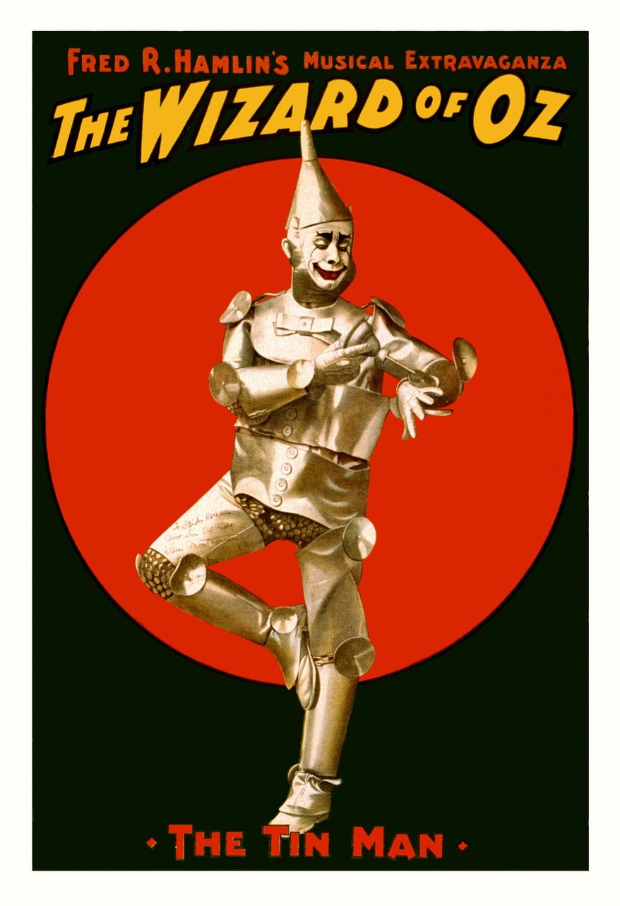
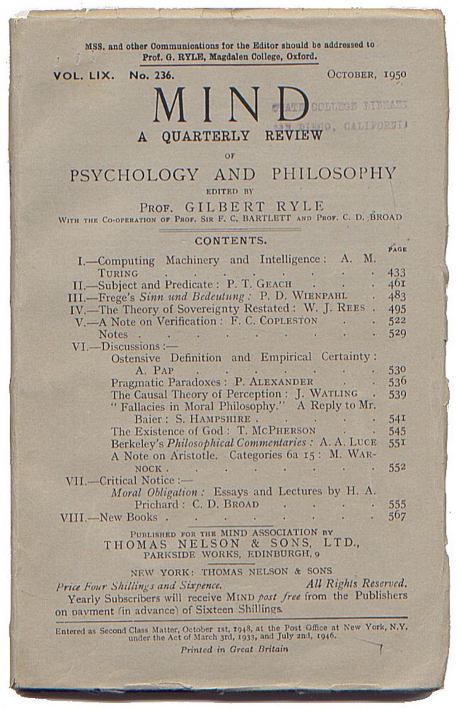

Artificial intelligence has a very intriguing beginning. The excitement around artificial intelligence actually began with the release of The Wizard of Oz film in 1939. Audiences were fascinating with the tinman who seemed to be a living, walking robot. By the 1950s scientists and researchers were beginning to think of what artificial intelligence could do for the world. However one mathematician, Alan Turing, is credited as one of the first people to really go into depth about the possibilities of AI.
In 1950, Turing published a paper Computing Machinery and Intelligence which discussed how to build machines that could solve problems and make decisions on their own. He proposed the question “Can machines think?”, which made waves in the tech community. The only problem was that Turing had no way of testing his theory because computers were not ready for this programming and way too expensive. So, until Allen Newell, Cliff Shaw, and Herbert Simon, no one would know if Turing was right or not about his proposed question. These 3 men created what is now known as “the first artificial intelligence program” (according to Wikipedia). This program was called “The Logic Theorist” and introduced in a 1956 conference. According to History-Computer.com the program was “ specially engineered to mimic the problem-solving skills of a human being”. Although the program did not work quite as well as expected, it proved that AI was achievable, and it would lead to years of research and progress in the field of Artificial Intelligence. Turing, Newell, Shaw, and Simon are the reason for the many pieces of technology that was use today. Google eggs, Amazon echos, Ring doorbells, and autopilot cars are just some of the things that we can thank these men for. If you don’t know what these things are, don’t worry, you can check out the other pages for more information on modern AI devices and how they will affect our future!
